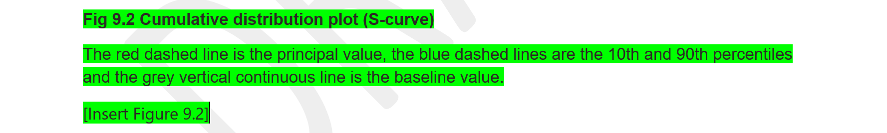

Word is better than Quarto?
NHS RPySOC 2025
13 November 2025
Hello 👋
- We’re from The Strategy Unit
- I am Jacqueline
- This is Matt
The New Hospital Programme 🏥
- The government is committed to building hospitals
- How to meet needs/get good value for money?
- Answer: we built a demand model
Reporting 📒
- End-users get model outputs and we co-author a report
- Requires automation/reproducibility
- So use Quarto, right? Right?
Existing Word template 📑
Existing Word template 📑
It looks like you’ve accepted your fate.

Decision 🧐
- Meet users where they are: in Word
- Editability and flexibility trumps total automation
- How can we maximise reproducibility?
Doing it
Process ✏️
- Record a request with a GitHub issue template.
- Tag model-run JSONs on Azure, update site-selections file.
- Read SharePoint template with {Microsoft365R}.
- Insert content with {officer}.
- Write timestamped folder with doc, results, log.
- Check output, return to recipient.
Issue template ✅

Generate a report 🖨️
In R:
populate_template(
scheme_code = "XYZ", # create a report for this scheme
site_codes = NULL, # NULL to fetch from Azure
result_sets = get_nhp_result_sets(), # fetch results metadata from Azure
run_stages = list( # list the tagged model runs
primary = "final_report_ndg3", # main data source for the report
secondary = "final_report_ndg2" # used as a comparator
)
)Generated report 📁️
Output file structure:
output/
└──YYYY-MM-DD-HHMMSS_scheme/
├──YYYY-MM-DD-HHMMSS_scheme.log # log of printed metadata
├──YYYY-MM-DD-HHMMSS_scheme_outputs-report_draft.docx # populated report
├──figures/ # standalone PNG files
└──values/ # CSVs of calculated values
Insert images with {officer} 👮
Insert values with {officer} 👮

- Add doc-property fields, e.g.
{ DOCPROPERTY item_54 }. - Add custom doc properties.
- Update values programmatically with
set_doc_properties(). - Refresh to insert values to fields.

Reflecting on it
Doing it right 💯
- Github: ‘learn by doing’, challenge and improve things
- Documentation/version history have saved us!
- The repo is a springboard for parallel/future work
Flexibility 🤸
The repository and code continue to help with:
- ad hoc work
- upcoming ‘refresh’ reports
- changes to inputs and back-end processes
Reflections 🪞
- Challenge your thinking, be adaptable to user needs
- Embrace agility and acknowledge fragility
- ‘The power of friendship’ keeps things working
Actions 🎬
- Consider user needs.
- Collaborate with GitHub.
- Stay flexible.
Check out:
- these slides and open code
- {officer}, the officeverse book and {Microsoft365R}
Find the repo at The Strategy Unit/nhp_output_reports